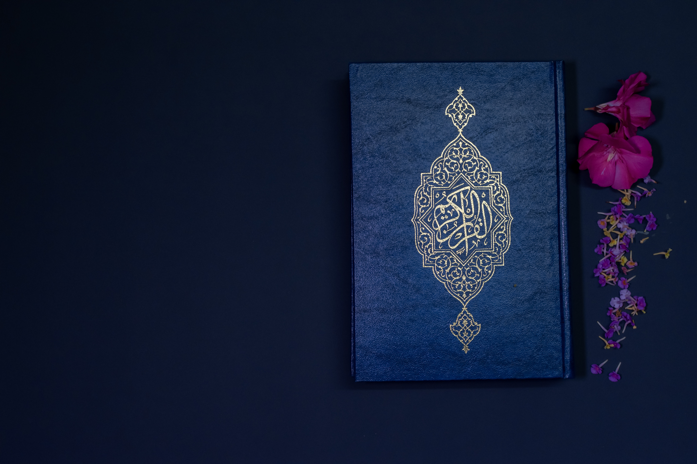

ISLAM
 Menjadi seorang muslim sangatlah susah tapi ketika tauhid kita berada paling puncak maka Allah S.W.T
tak akan segan-segan untuk mengabulkan apapun yang kita inginkan.
Tauhid disini berarti kita yakin bahwa Allah S.W.T ada dan kita percaya lebih dari apapun.
Saat kita sholat kita diharuskan untuk mengingat Allah S.W.T, padahal kita sendiri tidak
mengetahui seperti apa Allah S.W.T . Bahkan Rasullulah saat kembali dari langit tidak menjelaskan
seperti apa, ada kemungkinan mungkin Beliau tidak bertemu secara langsung namun berhasil berada pada
Arsy Allah S.W.T yang bahkan malaikat jibril tidak mampu untuk kesana. Lalu seperti apa Allah S.W.T ?
Saat kita berpikir kalau kita ingin menciptakan sesuatu pasti hal tersebut ada beberapa kriteria:
1. Benda/makhluk itu mirip sekali dengan kita sehingga kita akan membuatnya 1 persis tanpa
ada tandingan, kalaupun membuat dalam jumlah banyak pastilah benda tersebut persis sama tanpa
berbeda sedikitpun hanya disini jumlahnya dalam banyak
2. Benda/makhluk tersebut berbeda dengan kita sehingga kita menciptakan benda dalam berbagai hal
Menjadi seorang muslim sangatlah susah tapi ketika tauhid kita berada paling puncak maka Allah S.W.T
tak akan segan-segan untuk mengabulkan apapun yang kita inginkan.
Tauhid disini berarti kita yakin bahwa Allah S.W.T ada dan kita percaya lebih dari apapun.
Saat kita sholat kita diharuskan untuk mengingat Allah S.W.T, padahal kita sendiri tidak
mengetahui seperti apa Allah S.W.T . Bahkan Rasullulah saat kembali dari langit tidak menjelaskan
seperti apa, ada kemungkinan mungkin Beliau tidak bertemu secara langsung namun berhasil berada pada
Arsy Allah S.W.T yang bahkan malaikat jibril tidak mampu untuk kesana. Lalu seperti apa Allah S.W.T ?
Saat kita berpikir kalau kita ingin menciptakan sesuatu pasti hal tersebut ada beberapa kriteria:
1. Benda/makhluk itu mirip sekali dengan kita sehingga kita akan membuatnya 1 persis tanpa
ada tandingan, kalaupun membuat dalam jumlah banyak pastilah benda tersebut persis sama tanpa
berbeda sedikitpun hanya disini jumlahnya dalam banyak
2. Benda/makhluk tersebut berbeda dengan kita sehingga kita menciptakan benda dalam berbagai hal
 Kalau kita berpikir dari itu, dilihat dari no 2 didunia ini belum ada 1 pun hal yg berbeda, semua memiliki golongan dan golongan itu memiliki bentuk, sifat, dll sama, misalkan manusia yaa bentuknya sama namun beragam, jin juga begitu, malaikat pun juga begitu sehingga dapat dipastikan Allah S.W.T tidak sama dengan makhluk manapun karena Allah S.W.T tidak laki-laki ataupun perempuan karena semua makhluk Allah S.W.T dibedakan dalam 2 golongan. Kalau kita berpikir dari no 1, berarti kita belum tau seperti apa Allah S.W.T itu sebenarnya, padahal kita diharuskan saat sholat harus mengingat Allah S.W.T . Dan manusia kebanyakan dapat berpikir secara imajinasi lalu imajinasi seperti apa yang dimaksud ? Apakah harus selalu membayangkan Ka'bah sebagai tempat yang langsung tertuju pada Arsy Allah S.W.T ? Mungkin hal tersebut dapat dibenarkan, namun jika dengan mengingat Ka'bah sebagai Allah S.W.T maka hal itu disalahkan. Ka'bah hanya berperan sebagai pusat ibadah sholat semua muslim bukan Allah S.W.T . Lalu seperti apa Allah S.W.T ? Itulah hal yang akan menjadi pertanyaanku. Akan kutuliskan selanjutnya kalau aku mengetahui jawabanya.
Blockquote
Because of INTJ's open mindedness, willpower, independence, confidence, and planning abilities, they are capable of doing anything they set their minds to. Skilled at hacking anything life throws their way, INTJ are able to break down and learn from almost any system. They then use the ideas found there whereever they're needed. INTJ tend to have their pick of jobs, from IT system designers to business organizers.